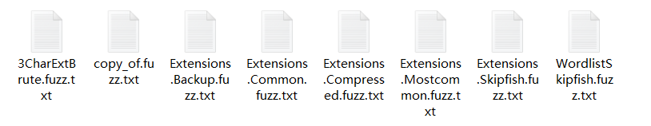
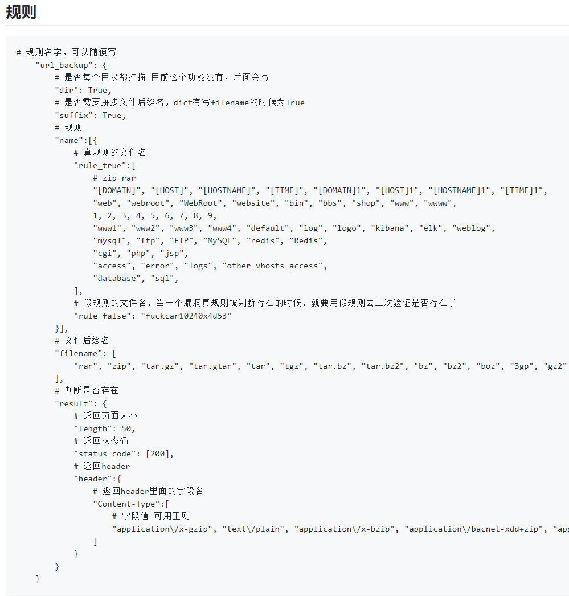
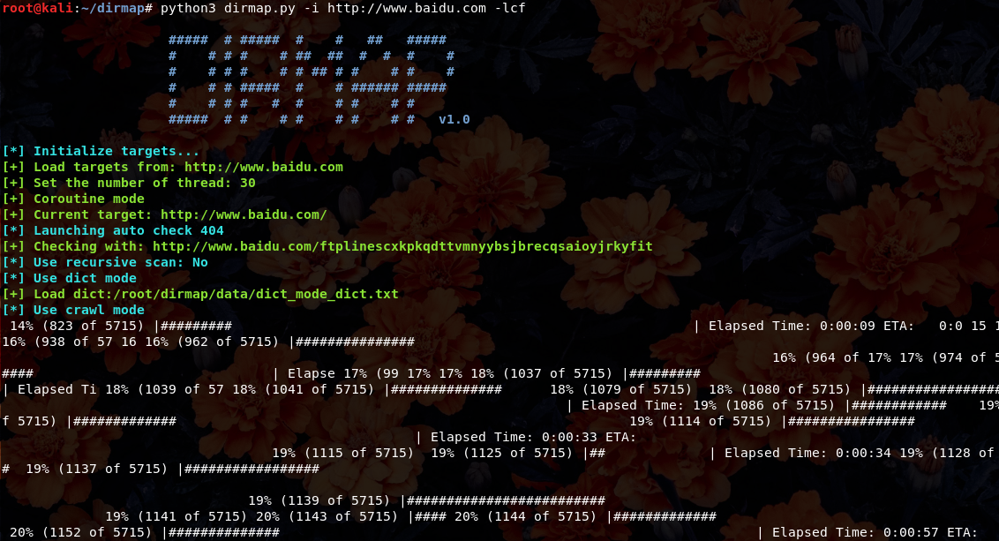
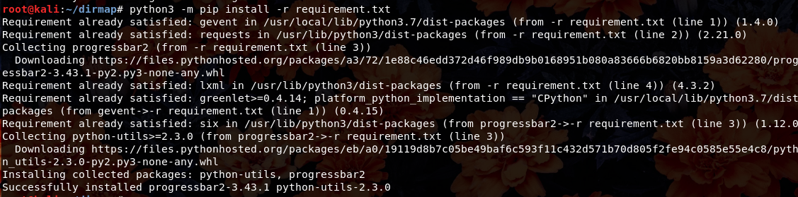
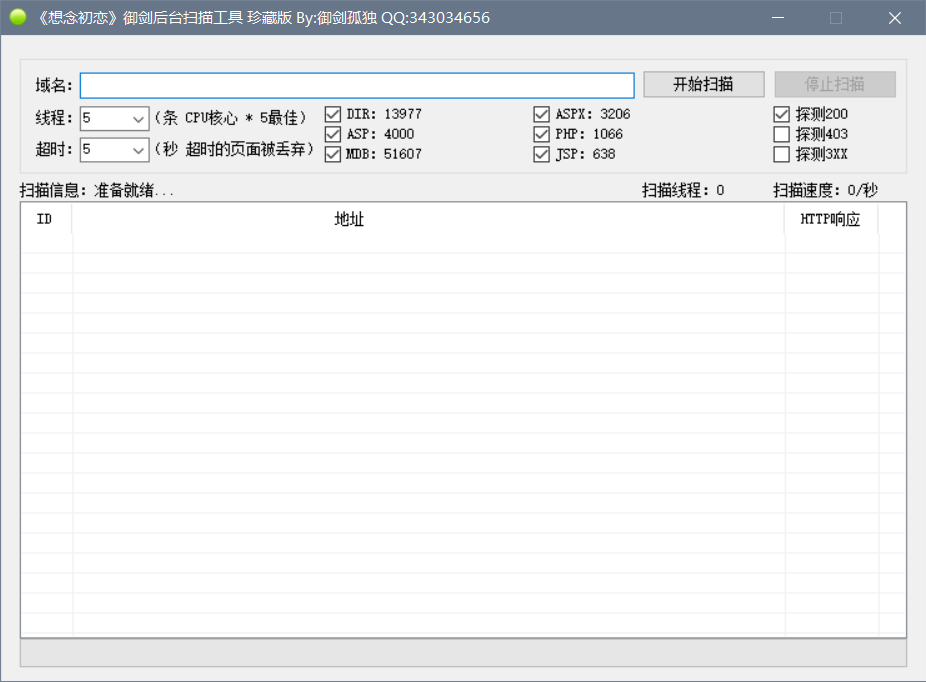
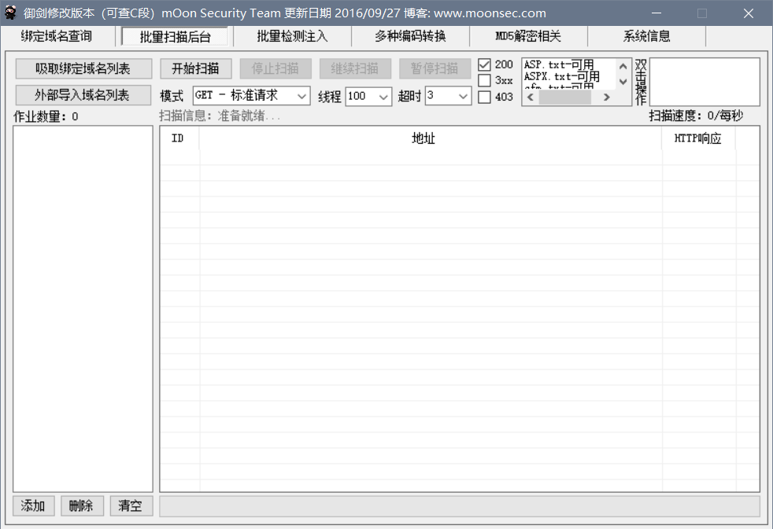

常规信息收集
常规信息收集之路径扫描
常规信息收集——状态码浅析
| key | value |
|---|---|
| 200 OK | 客户端请求成功，响应主题包含请求的结果 |
| 400 Bad Request | 客户端请求有语法错误，不能被服务器所理解，比如url插入无效的字符 |
| 401 Unauthorized | 请求未经授权，被允许之前要求进行http身份认证， WWW-Authenticate消息头说明所支持的身份验证类型 |
| 403 Forbidden | 禁止所有人访问被请求的资源 |
| 404 Not Found | 请求资源不存在，eg：输入了错误的 URL |
| 405 Method not allowed | 用了不支持的请求方法 如：put |
| 503 Server Unavailable | 服务器当前不能处理客户端的请求，一段时间后可能恢复正常 |
常规信息收集——路径扫描工具原理浅析
- 返回状态码
- 返回内容正则判断
- 返回头
- 返回内容大小
- 目录字典
……
github项目推荐：https://github.com/Mosuan/FileScan
 
常规信息收集——路径扫描工具
DirMap
- DirMap
一个高级的Web目录扫描工具
功能将会强于DirBuster，Dirsearch，cansina，御剑
- Github：https://github.com/H4ckForJob/dirmap
- 使用Python3安装所需支持库：
python3 -m pip install -r requirements.txt
 
7kbscan
御剑系列
- 御剑系列  